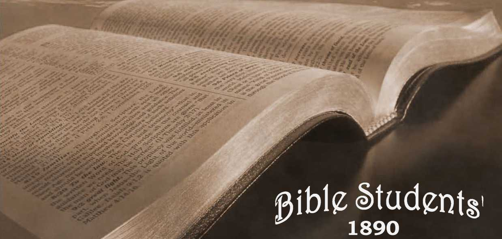
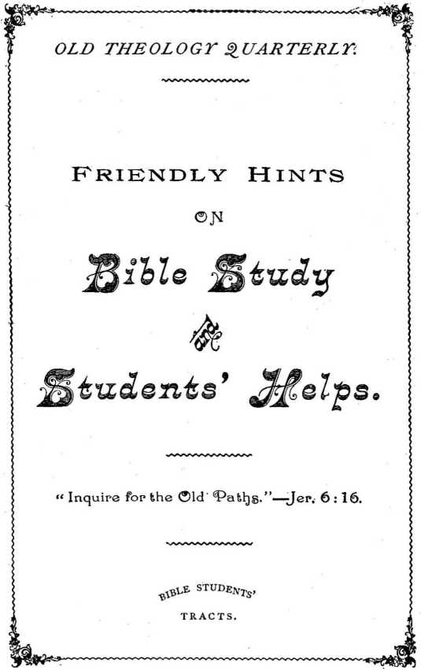
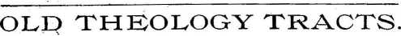
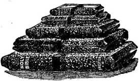
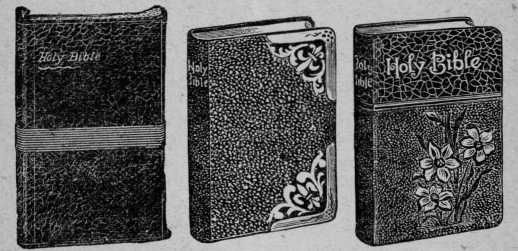
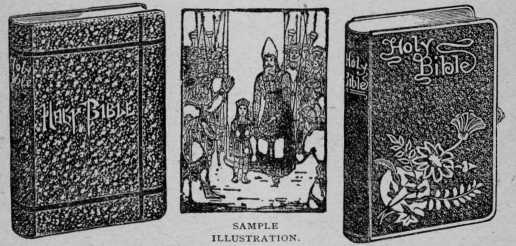

No. 5—Friendly Hints on Bible Study and Students’ Helps
APRIL, 1893. '
Entered as Second-Class Mail Matter at the P. O., Allegheny, Pa, ,
FOR THE
PR0M0TI0N-0F CHRISTIAN KNOWLEDGE.
PUBLISHED BY THE , ' . x
TOWER BIBLE & TRACT SOCIETY,
BIBLE HOUSE, ALLEGHENY,. PA.* #
, QUARTERLY, SIX CENTS A YEAR.
No. i. Do the Scriptures Teach that Eternal Torment is the Wages
• of Sin ?
No. 2. Calamities—Why God Permits Them. .
No. 3. Protestants, Awake I How Priestcraft now Operates.
' No. 4. Dr. Talmage's View of the Millennium.
No. 3. Bible Study and Students' Helps.
• No. 6. The Hope of the Groaning Creation.
No. 7. The Wonderful Story.— The Old, Old Story, complete.
No. 9. Swedish Trait—subjelt matter same as No. 1.
No. 10. A Broad Basis for True Christian Union. ~ .
No. 12. The Divine Plan.— Why Evil was Permitted.
No. 73. Norwegian Trait—subjelt matter same as No. 1.
No. 14. A Dark Cloudund its Silver Lining.
No. 13. “ Thy Word is Truth." A Reply to Robert Ingersoll. f .
Samples of any of the above will be supplied free, on application, to subscribers; or a single sample to any one. Thus many may be coworkers with us and with God in scattering the truth—“the hail.”—Isa. 28:17. Hundreds of thousands are being circulated thus, the funds being supplied by voluntary contributions from those whose hearts and heads have been refreshed by these “glad tidings of great joy which shall be unto all people.” ’
SPECIAL ISSUES—LEATHERETTE-BOUND.
No. 8. The Wonderful Story, Illustrated, 60 pages.
No. 11. Tabernacle Shadows of Better Sacrifices, Illustrated, no pp.
No. 16. “Thy Word is Truth."—An Answer to Robert Ingersoll's Charges against Christianity.
Extra Copies of these special issues are supplied to all regular subscribers at 10 cents’ each. Colporteurs are authorized to sell these special issues at three for 50 cents. %
ADDRESS AS ABOVE—
TOWER BIBLE & TRACT SOCIETY.
— AND —
NEEDFUL IJELPS THERETO.
Our Redeemer prayed for his disciples—“ Sanctify them through thy truth; ’ ’ and then added, ‘ ‘ Thy Word is truth. ’ ’ (John 17: 17.) He thus showed us a general principle, and one which experience demonstrates—that God’s truth is his agency for developing his children. Not general truths, however good and beautiful, such as botany, astronomy, etc., but truths which God reveals in his Word, are those which tend to produce in us, if we heartily receive them, the graces of God’s spirit—the spirit of the truth.
But the questions arise—“ What it God’s truth?’ ’ “What is God’s Word?” For it will be remembered that at the time our Lord said, “ Thy Word is truth,” the New Testament had not been written. It does not follow, however, that our Lord meant that the Law and the Prophets (the Old Testament) alone were to be considered the Word of God adapted and intended to sanctify us; but, rather, that all that God had caused tp be written by the prophets, together with all the explanations of those Old Testament writings which God would supply through Christ’s teachings, and afterward through the writings of thc'apostles, were to be esteemed as God’s Word—revelations of truth which would sanCtify those who believe them and who aCt accordingly. This he clearly showed when he declared, “ My doCtrine is not mine, but his that sent me “ The words that I speak unto you, they are> spirit and they ar* life;” “ I have yet many things to say unto you, but -ye cannot bear them now; howbeit, when he, the Spirit of truth is come, he will guide you into all truth, and he will show you things to come.”—John 7: 16; 6: 63; 16: 12, 13.
It will be seen, therefore, at once, that the opinion of many, that the prophecies of the Old Testament are all fulfilled and not now worthy of reverent study, is a great mistake —a serious mistake, because it blinds many to the great and beautiful promises therein revealed which are still future and vitally associated with the true Christian faith and hope, and therefore essential to complete sanctification. Of these, first in prominence are the promises of Christ’s Millennial Kingdom and of the great blessings which shall accrue to the world of mankind, and to the earth as man’s future home, of pleasing prospeCt and bountifully teeming with luxuries and comforts for the willingly obedient. Second are the promises to Israel of a restoration to divine favor and to a share in the Millennial work of blessing (educating, ruling and lifting up) mankind—promises which state ’as well as imply that the old patriarchs. are to be restored to life as perfeCt men, to be examples of what perfect manhood is and of what all the fallen race may attain unto by obeying the Lord Jesus, then, with his Church, the Ruler of earth.’ —ACts 3 : 19-22 ; 7 : 37 ; 1 Cor. 6 : 2.
Indeed, it is largely because of a failure to appreciate the Old Testament prophecies, that so many of God’s children have gotten so sadly mixed on all the teachings of the New Testament—shown by the conflicting creeds of Christendom. The apostles were continually referring to the statements of the prophets and interpreting them, and reasoning from that basis. (See, for instances, Adis 2: 24-32; 3: 19-22; Rom. 11 : 2, 8, 9; Gal. 3.)
From the prophecies they deduced and stated conclusions regarding the Lord’s will in the present age and declared his future purposes. (See Rom. 11 : 25-32; Adis 15 : 1416.) No wonder, then, that those who ignore the Old Testament should but dimly understand the arguments of the New Testament which are based upon those previous revelations.
YOU WILL REQUIRE ASSISTANCE.
If you are intelledtually bright, and have large perceptive and- refledtive powers and a good education, you can take the BiKle, and by years of patient, critical study, you may proye to your satisfadlion its divine inspiration and greatness from its internal as well as its external evidence, and acquire much of its wisdom and truth. But have you all these advantages? And if so, have you at your'command the years of time needful to their use? Most of the earnest truth-seekers have not; and even if they all had, would it not be an evident waste of time for each to study out this subjedt independently of each other one? We do not do so in other sciences, but make use of each other’s assistance—not, however, without proving what we accept, with our best reasoning faculties. And so we should do in Bible study. And evidently it is the Lord’s will that we should do so, since through the Apostle PauL he shows the mutual dependence, one upon another, of the various members of the Church, though some may be specially useful to the body, as eye or as right hand members.—1 Cor. 12:14-21.
THE CREDIBILITY OF THE SCRIPTURES.
Many able and valuable works upon this subject are obtainable through any bookseller, or in any public library; but the most of these are written in a style for the scholarly only, and, filling several volumes, require more time than many are able to give for such information; and hence few of the masses of the people know, as they ought, the firm foundation which God’s Word really affords for their faith. As a result; many have but little faith in the Bible and are often ashamed of it.
But we wish to call your attention to a very brief and painted treatise on this subject—one which you can digest in a few hours, and which will strengthen your faith in God’s Word for the remainder of your life. It is contained in the first three chapters of a book entitled “ The Plan of the fges." Whatever else you may or may not have read, you should read the fainted arguments there presented. And as parents and as Christians you should assist the young and the many who are skeptically inclined in this day of doubts, and help them to get settled and grounded upon the Bible as God’s Word. In the cas’e of your own children this is specially a duty that you owe them. And in the case of others, remember that, in God’s sight, we are each our brother’s keeper.
ONLY THE MEEK WILL BE TAUGHT.
When satisfied that the Bible is really God’s Word and intended to be the guide of his children, a lamp to our feet, while we walk by faith and not by sight, until the Millennial Day dawns, you will want to study it. How shall you begin ?
Begin as you would with any other study—systematically. The first requisite is a guileless heart—a simple hearj—one not too wise to be instructed—a heart that realizes that the information it seeks can come from God alone, that human wisdom is insufficient—a heart that is ready “ as a little child” to be taught of God. “The meek will he guide in judgment, and the meek will he teach his way.” (Psa. 25:9.) Because “ God resisteth the proud, but giveth grace to the humble.” (Jas. 4:6.) Such, then, must all be who would be “ taught of God. ” Others will fail to understand God’s Word; for he has arranged it so that others shall not understand it.—Dan. 12:10; Matt. 13:10, 11.
Again, the Apostle says, “ Study to show thyself approved unto God, a workman who needeth not to be ashamed—
“RIGHTLY DIVIDING THE WORD OF TRUTH.”
—2 Tim. 2 :15.—
To rightly divide the Word of truth, you should be shown how by some one who has learned how, otherwise you will find it a tedious and laborious task, costing precious years. And, alas 1 we regret to have it to say that few of God’s children have learned this secret of Bible study, and'few, therefore, can aid you to any considerable degree. Instead of recognizing the various ages and dispensations —the Patriarchal age, the Jewish age, the Christian age and “ the Ages to Come ”—and seeing the work God is gradually perfecting through these ages, they think of God’s dealings as almost aimless and without order. Hence, instead of rightly dividing and applying the various statements of Scripture severally to the various ages and dispensations to which they properly belong, they mix them all together and have a disorderly and seemingly contradictory mass which they cannot understand and can scarcely realize to be a revelation at all.
But, on the contrary, when the various ages are clearly in mind, and when the plan of God with reference to them is once seen, the Bible becomes an open book before the humble student—a great treasure-house of truth and grace, every statement of which can be definitely located! And when rightly applied to its proper age—past, present or future, as the case may be—the whole record from Genesis to Revelation falls into harmony.
As a help in the direction of the right dividing of God’s Word, we commend the book whose first three chapters we have already referred to, whose name, “ The Plan of the Ages," indicates but slightly its value as an exponent of the way in which the Word of God should be rightly divided —dispensationally—in order to be “ meat in due season ” to the household of faith.
The foundation here laid, in an understanding of God’s dispensational dealings, will lead the mind of the earnest student into green pastures of spiritual refreshment and strength, and open the way to and into “ the deep things of God,” both of knowledge and experience. Begin, then, with the study (not a reading merely) of “The Plan of the Ages,” and then go on unto perfection. The foundation properly laid in a heart-felt dfesire to know and obey God’s Word, and an outline of the ages in mind, your building up in the most holy faith, and with truths which will satisfy you wholly, will be an easy task.
THE SWORD OF THE SPIRIT, WHICH IS THE WORD OF GOD, should be well sharpened. That is to say, you will want a Bible with marginal references. If you can afford it, you should get what is termed a “Teachers’’ Bible,” which gives not only the text of the common version, and references, and marginal readings, but also an Index of Bible topics, a partial Concordance, a partial Dictionary of Bible names, places, etc., as well as maps and much other useful general information. Then you will want one or both of the—
TWO GREAT BIBLE CONCORDANCES.
The best Concordance for finding the location of a passage of Scripture quickly is the old, reliable Cruderis Concordance. Beware, however, of its theological definitions: they are very erroneous, unscriptural, and hence misleading if trusted.
But the most valuable in another way (though a passage cannot be found so quickly in it as in Cruden’s) is the justly celebrated work of recent years, known as Young's Greek, Hebrew and English Analytical Concordance. The author, Professor Young, of Edinburgh, Scotland, a ripe scholar of now world-wide fame, has here given to God’s children (many of whom have little or no knowledge of the Greek and Hebrew languages in which the Bible was written), a quick and ready means of ascertaining what Greek or Hebrew word was used in any particular place, and the meaning of that word as defined by Prof. Young: and the meaning may be judged still more accurately by running the eye down the column and thus comparing the various uses of the same word in other passages. All should have one of these Concordances. All who can afford it should have both— Cruden’s for quick general use, and Young’s for critical examination of any word or passage ; but the latter is preferable, if you get only the one. Then you will need, also,
THE EMPHATIC DIAGLOTT.
This is another of God’s special blessings for our day ; and with the foregoing described helps is worth more than a four years’ course in the Greek and Hebrew languages. First, it gives the Greek text for the Greek scholar. Second, it gives immediately under the Greek text a literal translation of it, word for word. Third, it gives in another column a smooth English translation suitable for common reading, showing also the emphasis of the Greek, usually lost to English readers. While we cannot say that this work is perfect, we can say that we know of no other translation of the New Testament so valuable to the critical student—and this includes all to whom we write.
The above, with the various volumes of the Millennial Dawn series, of which “The Plan of the Ages” is the first, really constitute an outfit of the needful helps. But if you have the means to spare, or if you can deny yourself in some other way, you will also find the following very useful:—
(i.) Rotherham's Translation of the New Testament. This is in many respedts an excellent translation, and, besides, has marks showing the emphasis of the Greek, not shown in the common English translations. It is valuable, as any translation is, for critical study of a text. A comparison of the different methods of expression gives the thought of the original more clearly to the studious.
(2.) Leeser's Translation of the Old Testament. This, too, is valuable. It is a translation by an unconverted Hebrew, who certainly has no bias favorable toward Christianity. This is the recognized translation among the Hebrews.
(3.) Rax general information upon religious subjects (not for dodtrinal instruction, though it contains a brief history of all doctrines and religions), we commend to you a Bible Dictionary. Smith's Bible Didlionary is justly popular, and though we cannot endorse its theological definitions, the work is valuable and instructive aside from these.
NOW, ANOTHER WORD-STUDY PRAYERFULLY.
Study of the Bible should never be attempted in any but a prayerful attitude of mind. It should be remembered that the nearer our hearts and lives come into sympathy and union with our God, the more receptive of truth we will be, and the more ready to understand it. Therefore while studying pray without ceasing; let your hearts continually thank the Lord for every item of truth you may see, no matter who or what has been his helping hand to lead you to it and make it plain ; and ever be desirous of knowing all that God has to reveal. Be cautious, too, lest you should allow prejudice to keep you from simplicity of mind ; and also lest Satan, through any man or woman or teaching, should beguile you into error after you have gotten free from prejudice and out into God’s sunlight. Our constant prayer should be,—Be thou my teacher, Lord, and use thou whom or what thou wilt in giving me the lessons.
Make sure, however, if even an angel from heaven preach to you any other gospel than that founded upon Christ crucified, that you rejebt it as spurious. (Gal. i:8.) All. gospels which rejedt the blood (death) of Christ as the basis of reconciliation and blessing come not from God, whoever may present them, or in however pleasant words they may be put to you. They are from the great adversary and deceiver, the devil, whoever may be his willing or unwitting agents, or whatever his agencies.
But avoid the mistaken idea of some, that prayer takes the place of study. Prayer may and should co-operate with study in relation to God’s Word, but it cannot take its place any more than in mathematics or astronomy. Hence, if you feel prompted by spiritual laziness or habit, or what' not, to pray to God to give you a knowledge of his Word and plan without patient, earnest study and the use of the various helps which he has provided, reflect that you are not justified in asking God to give you in a miraculous manner, of your own choosing, what he has already put within your reach in another manner, which is his choice.
Reflect, too, that before asking God to do a miracle for your instruction, you should learn obedience; and that he has said to you and to us all, “Study” (2 Tim. 2:15), “ Search the Scriptures.”—John 5 139.
HOW HELPS MAY BECOME HINDRANCES.
Beware how you permit any man’s thinking to take the place of your own. God does indeed make use of one and another of his children in pointing out to others the meaning of his Word. But, while humbly and thankfully making use of any helper’s assistance and esteeming such very highly in the Lord for their work’s sake, we want to remember not to become worshipers of men (messengers-—Col. 2:18), not to swallow any man’s teachings without critical examination in the light of our lamp—the Word of God. We may remember with profit that man is not our teacher, but God ; and that any man used of him as an under-teacher will, to the extent that he is in God’s employ, teach, expound and harmonize his Word, and not merely theorize on isolated passages of Scripture aside from their context.
When any new thought is suggested as to the meaning of a certain passage, turn to the passage and examine it critically, using the various translations of it at your command to see whether it seems to sustain the theory suggested. Nefict, examine the preceding and succeeding verses to see if the idea suggested be in harmony with the entire argument of the inspired writer. If it is not in harmony rejedt it at once: do not trifle with evident misapplications. .If, however, it seems to be in harmony with the immediate context, measure it with all other Bible statements bearing on or relating to the subject. Whatever you receive after thus testing and proving will stay with you. You will know what you believe and why you believe it.
“PROVE. ALL THINGS—HOLD FAST THAT WHICH IS GOOD.”
. —iThes. 5:21.—
If the student be a mechanic or a clerk or a house-keeper, with but limited time for study and using helps, he will soon come to the conclusion that the Apostle cannot have meant that each child of God should study up all the religious beliefs of the world, heathen and Christian ; for life would be too short for a thorough study of each, if that were the only business. Nor can he have meant that we should study up all the creeds of “Christendom,” with all the books which their various theologians have written in defense or explanation of their theories. Life would also be too short for this.
There is a simple, quick way, however, by which those who have accepted Christ as their Redeemer and King can profe all doCtrines to be either true or false as fast as they are presented to them. We will lay it before you. It may save you years of doubt and uncertainty, and will surely save you much time from confusing study of theories which are only misleading, and it will quickly place your feet upon the sure foundation, and give you time to study in the right direction.
If you have received Christ and learned of him at all, you will not need to look at any system or theory which does not recognize him. You have already proved all other ways of salvation false. Now about theories which do acknowledge Christ. Though they be legion they all may be divided into two classes—those which teach a progressive development, or the gradual evolution of the human family from a lower to a higher state, and those which, on the contrary, claim that God created man perfect, in his own likeness, and that he fell from his perfection, mentally, morally and physically, by disobedience.
The first of these acknowledges Christ as a teacher or guide only. Its advocates claim that he saves or develops men by his example, but that a sacrifice for our sins was unnecessary, except as the condescension to be an example cost him sacrifice.
The second of these views acknowledges Christ as Redeemer, as well as Teacher. It accepts the Bible statement relative to man’s fall from divine favor—from perfection, from life, to disfavor and condemnation to death as a sinner. It acknowledges Christ’s sacrifice finished at Calvary as the payment of man’s penalty, the price of his redemption, the basis of all God’s favor to sinners in the forgiveness of sins past and weaknesses present, and the hope of a future return in God’s due time to a state of perfection and harmony with him.
The last named view is the Bible view, as you know; and it becomes an easy matter to judge, upon this line, any theory you may hear or read. Any theory which has no important place for the fall, and for the cross, its remedy, is not of God, for these are the fundamentals of God’s revealed plan.—i Cor. 15 13, 4, 20-22.
Whatever you come across that will stand this test is on the right foundation, and is worthy of further examination and criticism with the Bible as the only standard. But any system which does not stand this test should be rejected promptly and forever. The more you seek to examine that which you see to be on a false, unscriptural basis, the more you will entangle and confuse yourself in the snare of the great adversary who seeks to beguile the bride of Christ as he did the bride of Adam. (Col. 2:4, 18 ; 2 Cor. 11:3.) Beware, therefore, of every theory as soon as you prove it to be off the ransom foundation, as soon as you find it contradicting God’s expressed penalty for sin, “ The soul that sinneth, it shall die,” and affirming Satan’s lie, “Ye shall not surely dieparley no longer with it. “ Neither shall ye touch it, ’ ’ which should have been Eve’s motto, should be yours, with reference to every dodtrine proved false by the only standard—God’s Word.—See Gen. 3:2-4.
A WORD IN CONCLUSION.
It is needful not only that you have the helps, and use them, as above suggested, but it will be needful that you begin to let shine upon others whatever light may reach you—not in pride, as though it were a discovery that you had made, but in humility, anxious only to lead others to the light for their profit and to honor your Father in heaven. (Matt. 5 :16.) The exercise of spreading the truth will react favorably upon your own soul, and you will be brought more and more into fellowship with all the truth-hungry children of God.
Then, you will want the semi-monthly visits of Zion’s Watch Tower, with the information and. assistance it is continually giving to God’s saints. It is entirely unsefta-rian, thoroughly loyal to the Word of God, discards the wood, hay and stubble of human tradition, and builds with the precious promises of God upon the one sure foundation, Christ and his sacrifice for sin. The price is moderate —designed merely to meet the actual expenses of publication. To any interested but unable to pay $1.00 per year, the Trail Society which publishes this tradl will send the paper free upon request. We also loan to the Lord’s poor, who will promise a careful reading and to return it, the book mentioned above as a special helping hand in Bible study—The Plan of the Ages.
So, then, none are so poor as to be unable to get some helps to Bible study.
Yours in the love and service of the Truth,
“BIBLE HOUSE,” ARCH ST.,
ALLEGHENY, PA.
BOOKS SENT BY MAIL ARE ALWAYS AT PURCHASER’S RISK, UNLESS IO CENTS EXTR^. IS SENT FOR REGISTERING.
MONEY IS SAFE WHEN SENT REGISTERED OR BY MONEY ORDER OR BY BANK DRAFT.
—A N D-
Desirous of placing before Christian friends, and the public generally, stick aids to Bible study as would be most helpful, and realizing that many of the most earnest of these have no surplus of this world's goods, we believe that we do a service to the Lord, and to this class of his people, and to the Truth by securing special cash terms, generally much below the usual rates, upon the books described in the succeeding pages. And since
and various cheap grades of Bibles are almost necessities to this study, we supply them at the
WHOLESALE COST PRICES;
consequently on books mentioned herein no further discounts can be made to wholesale purchasers, for any quantity.
We cannot better tell you what this Bible is than by quoting from the editorial columns of The Christian Advocate, as follows:—
“What Edition of the Bible Shall I Buy?”
“As to letter-press and binding, Bagster’s Bibles have never been excelled by any house. But for the past few years the ‘Oxford Teachers’ Edition’ has taken the lead on account of the superior ‘ Helps to the Study of the 'Bible ’ which accompany that edition. During all these years the great London publishers have not been indifferent to the wants and demands of Bible students, and now they have brought out the most perfect Teachers’ Bible that has ever been published. The size of the print is the same as the corresponding 8vo ‘Oxford,’ but h is clearer and more agreeable to the eye. The page is larger by a half inch in length and width, so that the book is better shaped and is not as clumsy in appearance. The text of the ‘Oxford ’ occupies 1,000 pages, while that of ‘ Bagster’s ’ fills but 773.
“ The superior excellence, however, of the ‘ Bagster ’ is seen in ‘ The Comprehensive Helps to Bible Study ’ which are found in the back part of the book. *These comprise sufficient matter of the most valuable character to fill four good-sized I2mo volumes.
“ In the ‘ Contents ’ of the ‘ Oxford Helps ’ there are 582 subjects noted; in the ‘ Bagster’ there are i860. This will give an idea of the fulness of information given. But the quality of this matter is of the very highest order. It has evidently been prepared by some masterworkman who knows what the ordinary Bible student wants to know and who possesses the happy faculty of expressing his thoughts in the most perspicuous manner.
“ If a copy of this Bible could be placed iq the hands of all the Sunday-School teachers in the Church, and then if they could be induced to read thoughtfully these ‘ Helps,’ it would prove an untold blessing to millions, for every scholar would reap a measure of the benefit.”
Christentrance into Jerusalew. ]
24 And he said unto them that stood by. Take from him the pound, and give it to him that hath ten pounds.
25 (And they said unto him, Lord, he hath ten pounds.)
2a For I say unto you. That b unto every one which hath shall be given : and from hlmthat hath nor, eventhat he hath shall ba taken away from him.
27 But those mine enemies,d which would notthatlsbould reign over them, brinz hither, and slay them before me.
28 T And when he had thus spoken, he wentbefore,ascendinguptoJeru8alem.
LUKE, XX. The husbandmen dnd the vineyard.
I A.D.33. । 1' CHAPTER XX.
J_____t AND a it came to pass, that on one of
.•Wai- 01 00 those days, as he taught the people in
5 28, the temple, and preached the gospel,
Ma 11 47 the chief Pri0st8 and the scribes came
a Mat. 21. 23,
mo cniei priests ana tne s Jiar. 1*^7, UpOn him, with the elders,
. 0 -”i 2 And spake unto him, saying, Tell
us»byc what authority doestthou these JUat‘ ok Zn things? or who is he that gave thee this A « ■ authority?
74; | 8 And he answered and said unto
cac. 4. r. 10. them, I will also ask you one thing ; ._ „ , and answer me: '
ars.2.4,5,».j. 4 The baptism pf John, was it from
PEARL TYPE. SIZE, 6 X 3% X 1% INCHES. POSTAGE IO CENTS.
8010 French seal, limp, round corners, gold edges,
8015 French seal,divinity circuit, round corners, gold edges,
8016 Same as 8015 except Index printed on gold edges,
REFERENCE BIBLES WITH A FEW TEACHERS’ HELPS.
TYPE AS ABOVE. SIZE, 6 X 3% X I INCHES. POSTAGE IO CENTS.
9010 French seal, divinity circuit, round corners, gold edges. J .79
Bagster’s Comprehensive Teachers’ Bible.
Christ's entrance into Jerusalem.
24 And he said unto them that stood by, Take from him the pound, and give it to him that hath ten pounds.
25 (And they said unto him, Lord, he hath ten pounds.)
26 For Isay unto you, That* unto every one which hath shall be given; and from him that hath not, even that he hath shall be taken away from him.
27 But those mine enemies,«which would not that I should reign over them, bring
LUKE, so.
A. D.33.
a Mat. 21. 23.
Mar. 11. 27.
bch.2.10,11
AC. 20. 24.
RO. 1.16.
Ep. 1.13.
6.15.
2 Tl. 1. 10.
cell. 8.18.
Mat. 13.12.
Mar. 4.25. I
The husbandnu
* CHAPTE
AND it came to ps those days, as he taugt temple, and preachet chief priests and the him, with the elders,
2 And spake unto h byit what authority things ? or who is he authority ?
3 And he answered ai
NONPAREIL TYPE. SIZE, 7^ X 5 X 1% INCHES. POSTAGE l8 CENTS.
8215 French seal, divinity circuit, round corners, gold edges, $2. 25
8216 Same as 8215 except Index printed on gold edges, 2. 50
8225 Syrian Levant, divinity circuit, round corners, red under
gold edges, leather lined, silk sewed, 3. 1,9
REFERENCE BIBLES WITH A FEW TEACHERS’ HELPS.
RUBY TYPE. SIZE, 6% X 4% X 1 INCHES. POSTAGE IO CENTS.
9025 French seal, divinity circuit, round corners, gold edges, $i. 24
9027 Same as 9025 except Index printed on gold edges, 1. 49
527 Syrian Levant, divinity circuit, round corners, gold edges, leather lined, silk sewed, size, 5 x 7 x inches (No Helps), 1. 88
'salem.
LUKHJ, XX. The husbandmen and the vineyard.
them that stood mud, and give it nds.
o him, Lord, he
'hat* unto every riven; and from hat he hath shall
A. D. 33.
a Mat.21,23,
Mar. 11.27, &c.
& chap. 8.18.
Mat. 13.12.
25.29.
Mar. 4. 25.
A CHAPTER XX.
ND a it came to pass, that on one of those days, as he taught the people in the temple, and preached the gospel, the chief priests and the scribes came upon him, with the elders,
3 And spake unto him, saying, Tell us, bye what authority doest thou these things ? or who is lie that gave thee this
EMERALD-MINION TYPE. SIZE, X 5% X INCHES. POSTAGE 22 CENTS.
8315 French seal, divinity circuit, round corners, gold edges, $2. 48
8316 Same as 8315 except Index printed on gold edges, .
REFERENCE BIBLES WITH A FEW TEACHERS’ HELPS.
TYPE AS ABOVE. SIZE, 8% X 5^ X INCHES. POSTAGE l8 CENTS.
9050 French seal, divinity circuit, round corners, gold edges, $2. 06
9052 Same as 9050 except Index printed on gold edges, .
608 Syrian Levant, divinity circuit, round corners, gold edges, leather lined, silk sewed, 7^ x x (No Helps), 2. 81
EXTRA LARGE PRINT BIBLES AND TESTAMENTS FOR THE AGED.
EXODUS, 30.
The altar of incense.
lis sons shall eat , and the bread ;, by the door of 5 congregation. ;at those things inent was made,
SMALL PICA TYPE.
children of Israel, and the tabernacle shall be sanctified by my glory.
44 And I will sanctify the tabernacle of the congregation, and the altar: I will sanctify also both Aaron and his sons, to minister to me SIZE 9^ X 5-H X 15^ INCHES. POSTAGE 22 CENTS.
302^ Sup. black cloth, red edges, no references, 307 French seal, gold edges, “
$ -9° i- 35 i- 5° 2. 06
NEW TESTAMENTS—TYPE AS ABOVE.
212 Roan leather, size, 5}^ x 8^, .... J -35
283 “ “ , with Psalms, size, 5% x 8j£, . .
• POSTAGE 12 CENTS.
FOR LARGE TYPE BIBLES WITH REFERENCES, SEE LIST OF FAMILY BIBLES.
This edition of the Scriptures is justly celebrated for its very comprehensive Index, Concordance and other helps to the study of the Bible, which constitute its appendix, within the same cover.
While in some respedls our preference is for the Bagster Teachers' Bible, it is but just to say that they are both excellent, and that each has its friends who think it superior to the other. Armed with either as a sword of the spirit,” “the man of God may be thoroughly furnished” unto much good for the Lord, himself and his fellows.
The name “Oxford” comes from the fadl that this work, with its helps, was originally published at Oxford, England. We do not handle the English edition, but the two American editions, which we describe.
OXFORD FACSIMILE REPRINT TEACHERS’ BIBLE.
This edition is a facsimile of the English work, page for page—helps and all The paper is good, the binding corresponds with the same grades and descriptions of the Holman and the English editions, and while the type shows quite clear, it cannot be said to be equal in clearness to either of these editions. But the prices are extremely low, and thus some can be accommodated who otherwise could not enjoy the benefit and convenience of a Teachers’ Bible. We have selected two grades of binding, and offer them as follows:
The promulgation ISAIAH, XL*
|
Before CHRIST cir. 712. b 2 Chr. 32. 31. 2 Or. tplcefy. 3 Or, jrweli. 4 Heb. ve»-tfla, Or.tn-tirumtnto. JIS. |
Hezekiah: for he had heard that he had been sick, and was recovered. 2 &And Hezekiah wjs glad of them, and shewed them the house of his 2 precious things, the silver, and the gold, and the spices, and the precious ointment, and all the house of his 34armour, and all that was found in his treasures: there was nothing in his house, nor in all his dominion, that Hezekiah shewed them not. .* 3 11 Then came Isaiah the prophet unto king Hezekiah, and said unto him, What said these men ? aud from whence came they unto thee? And Hezekiah said, They are come from a far country |
fadeth: because v tl Lord bloweth Upon people is grass. 8 The grass witheret eth: but Athe word < stand for ever. 9 VO Zion, that b ings, get thee up into tain; 3O Jerusalem, tl tidings, lift up thy voi lift it up, be not afra cities of Judah, Behoh 10 Behold, the Lord 4 with strong hand, an rule for him: behold with him, and ’his wg |
MINION TYPE. SIZE, 8 X 5% X 1% INCHES. POSTAGE 2g CENTS.
707 French seal, divinity circuit, round corners, gold edges, . $i. 75
713 Russian seal, divinity circuit, silk sewed, round corners, leather lined, gold edges, .... 2. 25
This edition of the Oxford Bible includes a feature never before presented in a Teachers’ Bible—the pronouncing feature. Every proper name is divided into syllables, and marked to indicate the proper pronunciation. It has this distinctive feature of superiority over the original -Oxford and all others.
The Concordance. Index and other Helps are the same as in the latest revision of the original Oxford.
These Bibles are from new type. The paper is elegant. Tie bindings correspond to the same descriptions of the original Oxford and other Teachers’ Bibles. These are to be had only in the one size of page and type.
THE FIRST BOOK OF THE
9 And the song of Cush • Se'b&, and Hav'i-lah, and SSb'ta, and Rag-mah, and Sab'te-cha. And the sons of Ra'^-mah.: She'ba, and De'dan.
10 And Cush d begat Nlm'rod: he began to be mighty upon the earth.
11 And Miz'r^-im begat Lij dim, and Xn'a-mim, and Le ha-bim, and Naph'tu-him,
12 And Path-rji'sim, and CAs'lu-him, (of whom came the Phi-lis'tmeg,) and c Caph' thp-rim.
13 And /Ci'naan begat Zl'don his firstborn, and Jleth, .....
14 The Jeb'u-slte also, and the Xm'-6r-Ite, and the GIr'ga-shite,
15 And the Hl'vlte, and the Xrk'lte, and the Sin'lte.
16 And the Ar vad-Ite, and the Z5m'-^-rlte, and the Ila'math-Ite.
17 The sons of 0'ShSm ; E'lSm, and As'shur, and Ar-phax'Sd, and Lud,
[APTER I.
Noah. 5 The sons of Japheth. fam. 17 The sons of Shem. 24 braham. 29 Ishmael's sons. 32 vrah. 34 The posterity of Abra-|3 The kings of Edom. 61 The
hSth, E'nosh,
»n, Ma-ha'lg.4e-el, Je'~ iMhii'sg-lah, La'mech, Jm, Ham, and Ja'pheth. (3 of Japheth; Go'mer, and Mgd'a-i, and Jabal, and Me'shech, and ns of Go'mer; Xsh'chS-phath, and To-gar'mah. sons of Ja'van; £-ll'-Sr'shish, Kit'tim, and
ns of HXm; Ciish, and ;t, and Ca'nSan.
Before
CHRIST
4004, &c.
d Gen. 10.
8,13, &c.
e Deu.2.23.
/Gen. 10.
15, &C.
a Gen. 10. 2J.& 11.10.
372
MINION TYPE. SIZE, 7^ X 5^ X 1*4- POSTAGE 25 CENTS.
C. French seal, divinity circuit, gold edges, ... $2. 50
D. French seal, divinity circuit, leather lined, red under gold edges...... . 3-17
THE VARIORUM TEACHERS’ BIBLE.
This valuable work has the usual references, a Concordance, Index and other helps somewhat similar to those of the “ Oxford ” and the “ Bagster,” which are preferred by some. But its distinctive feature is this: at the foot of each page of Scripture it gives the various renderings of obscure passages by learned men. (Sometimes these are valuable and sometimes confusing.) It gives also the various readings of quite a number of old Greek and FIebrew Manuscripts where they differ from the received text of the Common Version. •
0be cr&t into0 30 hell®*, een said, * Whosoever ,way his wife, let him ag of divorcement: ito you, That 0nvwhoso-away 0 his wife, saving tf fornication, y causeth
se which follow Be.; but • to words of preceding b De W. Tho.----17 Vs. 21,
. Tho. Wo. Mcl. El.----
'—19 V. 21. lower (or, local) .high court (of Jerusalem) used in Num. 20. 10) De W. ?f fire. ----23 V. 23. art
first go thy way Al. ray (to the judge), (comp. --- 28 Omit. ---& V. 28. .----28 in order to lust Al.
'. make thee to stumble.
Strictly shall have.
So A* D, OL. Cur. Pesh. 41.1 Tr.1; omit NB, Vulg., i. We. Mel. WH.---V. 25.
B D, Edd.---y Omit K B,
. 0 Omit N B D, Edd.---
f. ---V. 32. 0 every man
Edd.---y causeth adul-
upon her H B D, Edd. tooman Li.; implying equal
CHAPTER 6.
1 Christ continueth his termon in the mount, speaking of alms, 5 prayer, 14 forgiving our brethren, 16 fasting, 19 where our treasure it to be laid up, 24 of serving God, and mammon: 25 exhorteth not to be careful for worldly things: 33 but to seek God's kingdom.
0 rn A K E heed 0 that ye do not your JL y || aims y before? men, to be seen of them : otherwise ye have no reward || of your Father which is in heaven.
2 Therefore « when thou doest thine alms, || do not sound a trumpet before
| Or, right-stutntn. Deut. 24.13. Pl. 112. 9. Din. <. 27. a cor. a. a, 10.
| Or, irift.
« Rom. U.S.
| Or, c«<iw n»t a trum-prt is is stunM.
Va.r. Rend.—83 V. 82. her, when divorced Al. El.; one that is divorced Mel.---88 V. 37. manner of
speech Al.---84So Be. Bl. Da.; the evil one Fri.
Me. Mcl. DeW. Wo.- 85 V. 39. So Mcl.; the evil man Al. De W. Ole. Me. Da.- 38 V. 40. take thy coat as a pledge Al. DeW.---37 V. 41. impress
thee for (technical term from the Persian postal service).----«8 V. 45. sons.----89 V. 47. show kindness
to Tho.----40 V. 48. Ye shall be.
Var. Read. — V. 82. S Omit D, OL.; WH. doubly bracket.---V. 44. 0 Omit N B, Edd.---y Omit N B, Edd.
---V. 46. 0 So H B L, Ti. WH?; so D Z, Cur. Memph., La. Tr. Mcl. We. WH.1---V. 47. 0 the heathen the
same N B D, Edd.---- V. 48. 0 Omit fr* B, Edd.---
y heavenly Father N B D2, Edd. Chap. 6. F. 1. 0 So B D, La. Tr.1 Mcl. We? WH?; But take heed N L Z, Al.1 Ti. Tr? We.1 WH?---y righteousness
(as margin) N* B D, Edd.
NONPAREIL TYPE. SIZE, 7^ X 5^ X INCHES. POSTAGE 15 CENTS.
2224 Alsatian Levant, divinity circuit, round corners, leather
lined, India paper, silk slwed, red under gold edges, $4. 50
This work is commented on by The Ensign as follows:—
“ It is called the 4 Variorum’ Bible because, in addition to the common English version of the Scriptures, with copious references, it shows at the bottom of each page, 1. All corrections of the text which have been suggested by the great historic translations, critical scholars, and commentators, from the earliest times to the present day. 2. All improved readings or translations, from the best scholars of all ages. The results of these vast labors of the most competent and devoted Biblical students are expressed in English, briefly and clearly, by a simple system of references that anybody can use, so that we have under the eye at once the ripe fruit of all that has been done through the centuries to enable the English student of to-day to examine carefully, and understand intelligently, the Word of God. The scholars, critics, commentators, etc., are indicated by symbols or initials, which enable the student to compare their judgments, estimate their value, and search further in their works if he wishes to do so. . . . As an English Bible this work is simply matchless.”
THE VARIORUM REFERENCE BIBLE.
This edition of the Variorum Bible is the latest in every respect: it has not the Concordance, Index, etc., of the Teachers’ Edition, but it has a few additional notations in the foot-notes, bringing it up to date in every particular.
It will be noticed that it is larger and has exceptionally clear type.
zythians.----
Mans, in the >e. Tartessus, m Kition, a did the isles -8 V. 6. i.e. i (Nah. 3. 9; into Assyria, ■13 V. 12. the. —15 V. 14. i.e. Ezek. 30. 14. Ge. Kn. De.; i.e. the Rho-. 3 separate the sons of i of Japheth, -F. 14. 3 and tim [i.e. the i Deut. 2. 23;
AND the whole earth was of one jA. t language, and of one f speech.
|
+ Heb. lip. + Heb. words. cir. 2247. II Or, eastward, as ch. 13.11. 2 Sam. 6.2. with 1 Chron. 13. 6. |
|
Var. Rend. —16 V. 21. So the accents. Or. the | |
|
elder brother of Japheth, Tu. Kn. De. Ka. Di. R. The early interpreters are divided.----17 V. 25. Or, did (the people of) the earth divide themselves, De. Di.----18 V. 30. the.----19 V. 32. from these did. the nations separate themselves.----CHAP. II. 1 V. 2. As marg., Tu. Kn. De. Ke. Di. R. | |
MINION TYPE. ' SIZE, 9^ X 6% X INCHES. POSTAGE 30 CENTS.
2230 India paper edition, Venetian limp, round corners, gold edges, . . • . . . . . $4. 5°
2233 India paper edition, Turkey Morocco, stiff boards, gold edges, gold roll, . „ . . . 6. 00
2235 India paper edition, best Levant, superior divinity circuit, round corners, red under gold edges, silk
sewed, kid lined, . . . . . 9. 00
THE NEWBERRY BIBLE.
SMALL PICA TYPE. SIZE, IO X 7 X 2 INCHES.
This very valuable work is more especially for those who have a thorough, grammatical English education. It will enable such to form correct, grammatical ideas of the Hebrew and Greek Scriptures; and thus give them an advantage above that enjoyed by ordinary Greek and Hebrew scholars—for only a few of the latter have a grammatical appreciation of the Bible in its original languages.
We describe the Bible in the words of another: “ Mr. Newberry annotated the Bible throughout, with immense care and patience, on a new system. By an arrangement of signs attached to the words of the text, he conveys to the English reader the precise nature of the article, moods, tenses and particles. Foot-notes supply succindt apparatus for textual criticism. Side-notes provide the originals of many of the most important words, as well as copious references. A work so complete, so ingenious and so helpful to the Bible student ought in this new form to enjoy extended popularity.”
The late Horatius Bonar said of it: “ It is beyond all price. Its minuteness of detail, its accuracy, its perspicuity, its scholar-like finish, are such as to make one of the most trustworthy and precious volumes in connection with critical study that have ever issued from the press.” In beveled boards, Persian Morocco, gold edges, . . 35
In divinity circuit, “ “ “ “ . $6. 60
The general prices are $7.50 and $9.00.
POSTAGE 40 CENTS.
THE TISCHENDORF NEW TESTAMENT.
BREVIER TYPE, CLOTH BINDING. SIZE, 6% X 5^ X INCHES.
This is the New Testament with foot notes by Prof. C. Tischendorf, showing the various readings of the oldest three Greek Manuscripts (the Sinaitic, Vatican and Alexandrine) wherever they differ from the common English version. This is quite valuable for critical study. It is the highest authority on interpolations. Of this work we have imported a large quantity. The usual price is JI. oo, but we will supply them at 50 cents, including postage.
VARIOUS NEW TESTAMENTS—COMMON VERSION.
NO. DESCRIPTION. PRICE.
801 Ruby type, cloth binding, 3x5 inches, . .
805 “ “ French seal, gold edges, 3 x 4 inches, .
813 “ a ■“ “ divinity circuit, gold edges, 3 X4in. .30
POSTAGE 2 CENTS.
705 Same as 805, with Psalms, ... . .
707 Ruby type, French seal, round corners, gold edges, with Psalms,
713K Same as 713, with red under gold edges, ...
POSTAGE 3 CENTS.
287 ,Brevier type, roan, gold edges (Psalms added), 4 x 6 in. .35 . POSTAGE 5 CENTS.
FOR PRICES OF BIBLES AND TESTAMENTS IN FOREIGN LANGUAGES ADDRESS US.
VARIOUS BIBLES—COMMON VERSION.
WITH REFERENCES WHEN MARKED *.
FOR SAMPLES OF TYPE SEE FOREGOING ILLUSTRATIONS.
NO. DESCRIPTION. •
178 Pearl type, cloth, red edges, .
POSTAGE 7 CENTS.
POSTAGE IO CENTS.
131 Nonpareil type, cloth, red edges, .
129 “ il “ roan leather, embossed,
POSTAGE 12 CENTS.
109* Minion type, cloth, . . .
POSTAGE 16 CENTS.
83 Bourgeois a (type about this size), .
81 “ “ “ roan leather, embossed,
gold edges, ....
POSTAGE 20 CENTS.
62* Bourgeois type, roan leather, embossed, gold edges, . ... .
POSTAGE 28 CENTS.
PEARL TYPE BIBLES.
5^2 X 3% x INCHES, NO REFERENCES.
No. 113. No. 43. No. 36.
056 “ “ “ , wire clasp, “ v , •
113 “ seal, divinity circuit, round corners, gold edges, .56
120 French duplex, honeycomb design, round corners, gold edges, .60 123A “ Levant, padded, “ “ “ “
129 Imitation Ivory, handsome designs, rims and wire clasp, -75
POSTAGE 7 CENTS.
140 French seal, gold edges, 48 illustrations, Ruby type, 6x4 in. .75
143 “ , finer, u “ “ “ “ “ “ “ “ 1.13
POSTAGE IO CENTS.
I23A.
140 & 143.
056,
BIBLE STUDY HELPS.
THIS IS THE GENERAL TITLE OF A SERIES OF BOOKS BY THE EDITOR OF ZION’S WATCH TOWER.
Vol. I., “ The Plan of the Ages, ’ ’ gives an outline of the divine plan revealed in the Bible, relating to man’s redemption and restoration from sin and death : 350 pages.
Vol. II., “The Time is at Hand," treats of the manner and time of the Lord’s second coming, considering the Bible testimony on this subject: 366 pages.
Vol. III., “ Thy Kingdom Come," considers prophecies which mark events connedted with the “ Time of the End,” the glorification of the Church, and the establishment of the Millennial Kingdom ; it also contains a chapter on the Great Pyramid, showing its corroboration of the dates and other teachings of the Bible : 380 pages.
The volumes of this series are of uniform size and price: In cloth binding, $1.00, postpaid (supplied to Watch Tower subscribers in any quantity for loaning, etc., at the wholesale rate, 50 cents each). In Leatherette covers, limp, 35 cents, and in paper covers 25 cents (35 cents when delivered by Colporteurs). In paper covers they are supplied to Watch Tower subscribers for loaning, etc., in packs of 5 or 10 or 20 of any one volume, at fifteen cents each, postage paid. And on request we will loan to any too poor to purchase a paper-bound copy of any one volume, if he will promise a careful reading and to pay return postage.
[Vols. I. and II. are already published in the German language, and Vol. III. is now in preparation. Swedish and Danish translations of Vol. I. are in prospedt.]
POEMS AND HYMNS OF DAWN.
This volume contains a very choice selection of 150 Poems and 333 Hymns, purged, we trust, from much of the tod common, erroneous, hymn-book theology : 494 pages, good print, cloth binding only. It is the Gospel of the Kingdom in verse, by the pens of many of God’s dear saints of all centuries. It is a companion to Millennial Dawn, and sells at same price. It is designed to lead the mind aright in meditation and worship.
A SIXTEEN PAGE MAGAZINE, ISSUED TWICE A MONTH.
This journal is religious but not sedtarian; and it is devoted to the investigation of all Bible subjects, in the interest of the truth only. With charity toward all, it is in bondage to no party, system or creed, but to Christ alone. It recognizes all consecrated believers in Christ’s atoning work, as members of the oqe and only Church established by our Lord and the Apostles.
If interested in the Millennial Dawn books, you cannot afford to do without the Watch Tower, and its price is small—one dollar a year in advance—free to any of the Lord’s children who through age or accident or other adversity are unable to pay, and who will send a Postal Card, yearly, stating their case and requesting the paper.
This is the name of a semi-monthly journal on the same line as the Watch Tower, but in the German language. Fifty cents a year in'advance—free to the Lord’s poor.
Address “Sickle Publishing Co.,” Allegheny, Pa.
THE EMPHATIC DIAGLOTT.
This work, widely and favorably known, is a Greek New Testament with a literal, word for word, English translation, under the Greek text. It also gives an arranged English translation in a side column. Furthermore, it indicates the grammatical emphasis of the Greek text, so important yet so little appreciated, and not shown at all in the common version.
The retail price of this work is $4.00, postage 16 cents. But a Brother, very anxious that all the Tower readers should possess this help, in order to bring it within the reach of all, arranged to supply the books at $1.50, if we would pay freight and postage, so that even the poor might have this blessing. We accepted the proposition, which still continues, but is limited to WATCH TOWER SUBSCRIBERS—one copy each.
YOUNG’S ANALYTICAL CONCORDANCE.
— GREEK, HEBREW AND ENGLISH.—
This work is at once a Greek and Hebrew Lexicon, giving the meaning of the original terms in English, and also a Concordance, giving all the words of Scripture, and the words which they translate. The value of the work is becoming more apparent daily, as theorists attempt to palm off a private interpretation under the guise of “ a better definition of the original."
In this superb volume every word is arranged under its own Hebrew and Greek original, exhibiting 311,000 references and 30,000 various readings. Its size is large quarto: 1094 pages. The retail price of the book is $5.00, with postage, 55 cents, added—$5.55. Our price is $4.25 by mail, postage prepaid by us ; or $3.70, if sent by express at purchaser’s charges. As it is quite a large volume (weight seven pounds), it will be cheapest, for most purchasers, to get it by mail. This is the “Author’s Edition,” and the latest, A. D. 1893, revision.
YOUNG’S CONCORDANCE IN GREAT BRITAIN.
We have made arrangements by which we can supply our readers in the United Kingdom with this work, post free, at 17 shillings in cloth binding, 20 shillings in half leather binding. The usual prices for the same are 24 and 28 shillings respedtively, postage extra. A number of our friends in Great Britain have been desirous of securing this volume, but we have heretofore been unable to offer it at prices corresponding to that of the American edition. ,
Our friends will please not ask for credit on this book, nor on any of those we offer for sale (—except the Millennial Dawn Series, to colporteurs on special terms). We are enabled to procure them at so low prices only by cash in advance payments.
AN INDEX TO YOUNG’S CONCORDANCE.
This, too, is a very valuable work, but only to those who can appreciate it. Indeed, we fear that to some, who do not understand something about translating, it might be injurious. It shows all the various ways in which the Hebrew and Greek words have been translated in our Common Version Bible; and the unsophisticated might get the impression that a Greek or Hebrew word may be translated by any English word at the caprice of the translator ;—not knowing the difference in the arrangement of English sentences. But it is the entire phrase of the Greek or the Hebrew that must be compared with the English phrase which translates it and not always word for word. Price, postpaid, 50 cents.
CRUDEN’S BIBLE CONCORDANCE
In cloth binding—price 75 cents; postage 25 cents extra Much below the regular price.
THE SYRIAC NEW TESTAMENT.
Murdoch’s Translation of the Syriac-Peshito manuscript is sometimes inquired for. We can supply it in substantial, half-leather binding, postpaid, for $2.00.
ROTHERHAM’S TRANSLATION
Of the Naw Testament is valuable, as an emphasized translation, in critical study. We can supply it in cloth binding at the very low price of $1.00; postage 15 cents extra.
LEESER’S TRANSLATION
Of the Old Testament will also prove useful. It is a critical translation of the Old Testament by a Hebrew—the standard among Hebrews who read English. Price $1.35, including postage.
SMITH’S BIBLE DICTIONARY,
With useful information of an unsedtarian sort on all religious subjects, will be found of value; though we cannot endorse all of its theological definitions.
We can supply these at $1.00 per copy—postage 30 cents extra. This is below the usual price.
SEVERAL OF THE FOREGOING BIBLE STUDY HELPS ARE MORE PARTICULARLY DESCRIBED ON PAGES 9 AND IO.
TUNES FOR HYMNS OF DAWN.
In preparing our collection of hymns we had the desire to make it complete by adding the music. But, since nearly all the modern tunes are copyrighted, we found that we must publish only the hymns with uncopyrighted tunes, or some with music and some without it, or do as we did do, —publish the best hymns from every quarter and indicate where the tones can be found.
The following hymn-books contain the. tunes; the first three named containing almost all of them. These books are standard and are sold very close by all dealers. Our prices, named below, include postage. We supply them merely for the convenience of those using Hymns of Dawn.
Gospel Hymns (combined, Nos. i to 4), paper boards, $ .80 Songs of Pilgrimage (350 tunes),cloth, leather back, 1.25 (The price of this elegant volume alone is limited by the publishers ; but we are at liberty to supply it and our Hymns of Dawn together for $1.50, postpaid.)
Winnowed Hymns, limp cloth, - - - $ .35
Epworth Hymnal, No. i., paper boards, - .40
THE EXHAUSTIVE CONCORDANCE.
As we go to press we are advised that this great work by James Strong, an M. E. minister of note, will probably be ready shortly. The prospectus indicates that this also will be a valuable Bible Study help. It must be ranked along side of Young’s. It is on a different plan, and each will find those who will prefer it. Both would be desirable, but those who can have but the one will find difficulty in making a choice between these masterly works.
Young’s Concordance is described foregoing. Its advantage over Strong's is in the fact that the texts are grouped according to the originals and not according to the English.
Strong's Concordance will be much like Cruden ' s in the arrangement as a concordance, but it will have the additional advantage that each reference, by a number, will indicate its Greek or Hebrew derivative and its signification in a lexicon which will follow the concordance in the same volume.
The publishers have announced prices as follows: Cloth binding, $5.00 ; Half Russia, $6.00; Half Turkey, $7.50; postage or expressage extra. They fear, however, that they can give little or no discount, and even announce that these prices may be advanced, as their expense is more than was anticipated.—However, we shall expedt some discount, and will be ’able to save you at least the expressage or postage (about 60 cents), if nothing more.
FAMILY BIBLES.
We have arranged with the Methodist Publishing House for the choice line of Family Bibles in English and Gou man published by them.
These we will supply to any subscriber to Zion’s Watch Tower or to any purchaser of Millennial 'Dawn at one half the regular list price, the price at which the publishers furnish them to agents, wholesale. Or we will supply them to any one else for 10 per cent more, to cover our time and trouble. Illustrated Catalogue free on application.
Address orders to—
Bible House, Arch St., Allegheny, Pa.